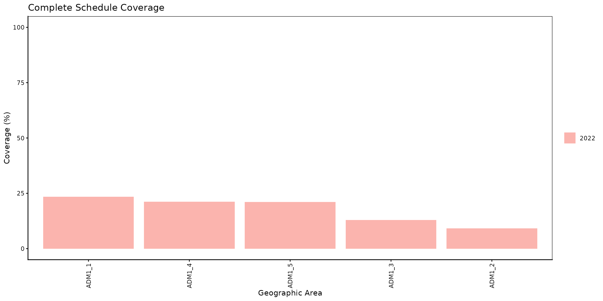
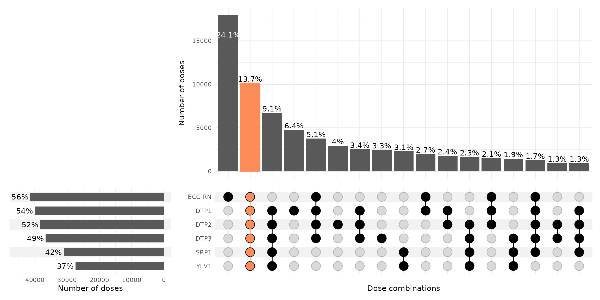

Complete Schedule Coverage
PAHO/CIM
April 11, 2025
Source:vignettes/complete_schedule_en.Rmd
complete_schedule_en.RmdRationale
The purpose of this analysis is to evaluate whether the target population has been fully vaccinated according to the country’s defined immunization schedule for a specific location and cohort. To construct this indicator, it is essential to assess if each individual received all doses specified in the schedule. For instance, a country’s complete immunization schedule might include: 1 dose of BCG for newborns, 3 doses of DTP-containing vaccine, 1 dose of MMR, and 1 dose of yellow fever vaccine. Unlike administrative records, which often use a tracer dose from the end of the schedule (e.g., DTP3), the use of Electronic Immunization Records (EIR) allows for the evaluation of all vaccines within the schedule.
Note
All functions used for complete schedule coverage analyses within PAHOabc begin with the
cs_prefix.
Country Vaccination Schedule
To enable this package to analyze the vaccination schedule, it is necessary to provide the country’s immunization schedule using the same format as the example schedule shown below.
# show example vaccination schedule
pahoabc::pahoabc.schedule %>%
kable(
caption = "Example country vaccination schedule",
col.names = c("Dose", "Recommended age (in months)")
)| Dose | Recommended age (in months) |
|---|---|
| SRP1 | 12 |
| DTP1 | 2 |
| DTP2 | 4 |
| DTP3 | 6 |
| BCG RN | 0 |
| YFV1 | 12 |
Complete Schedule Coverage Computation
Expected Workflow
The cs_coverage(), cs_barplot() and
cs_upset() functions provide a way of analyzing and
visualizing complete schedule coverage. Their relationships are shown in
Figure 1.

Example
Below is a simplified example of the calculation of complete schedule coverage for the first subnational administrative level, focusing on the birth cohort of the year 2022.
# compute coverage
coverage_df <- cs_coverage(
data.EIR = pahoabc.EIR,
data.schedule = pahoabc.schedule,
geo_level = "ADM1",
birth_cohorts = 2022 # this can be a vector of years
)
# show results in table
coverage_df %>%
kable(digits = 2, caption = "Complete schedule coverage by ADM1 level")| year | ADM1 | numerator | population | coverage |
|---|---|---|---|---|
| 2022 | ADM1_1 | 406 | 1733 | 23.43 |
| 2022 | ADM1_2 | 1145 | 12428 | 9.21 |
| 2022 | ADM1_3 | 6508 | 50238 | 12.95 |
| 2022 | ADM1_4 | 1355 | 6382 | 21.23 |
| 2022 | ADM1_5 | 735 | 3488 | 21.07 |
Bar plot
It is possible to display the previously obtained results in a bar
plot with cs_barplot().
# visualize output from cs_coverage()
coverage_plot <- cs_barplot(data = coverage_df)
# show
coverage_plot
Upset plot
The cs_upset() function allows us to produce an upset
plot to evaluate the percentage of individuals included in the EIR who
have received any of the possible combinations of the available
vaccines. The orange bar represents the proportion of individuals who
have received all the evaluated vaccines, thus indicating the complete
schedule coverage. The horizontal bars show the proportion of
individuals who received each specific vaccine (i.e., the coverage for
that vaccine).
# produce upset plot
coverage_upset <- cs_upset(
data.EIR = pahoabc.EIR,
data.schedule = pahoabc.schedule,
birth_cohort = 2022
)
# show
coverage_upset
In the example the complete schedule coverage reached 13.7% and is represented by the orange bar. It is noteworthy that 24.1% of individuals in the EIR received only the BCG vaccine, and that the third most frequent combination (9.1%) consists of individuals who received all other vaccines except BCG. This could indicate an error in recording a newborn’s BCG vaccine using temporary identification numbers.